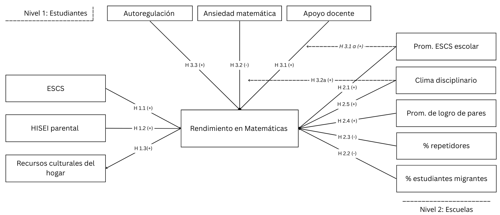

Capital individual, composición escolar y mecanismos psicoeducativos en el rendimiento en Matemática de los/as estudiantes chilenos
Katherine Aravena Herrera
Coloquio de Investigación en Justicia Distributiva y Desigualdad Socioeconómica
10 Septiembre 2025, Santiago
Persisten brechas en Matemática y una parte sustantiva del desempeño se organiza entre escuelas (componentes contextuales).
(Benavides-Moreno, 2023; CIAE, 2025; Araneda, 2025)
La evidencia suele tratar por separado el capital individual y la composición escolar, omitiendo el rol articulado de mecanismos psicoeducativos.
(Budnevich, 2020;Taut & Escobar, 2012; Agencia de Calidad,2017 )
Tras SEP y Ley de Inclusión/SAE, persiste la duda sobre la magnitud actual de los efectos de composición.
(Benavides-Moreno, 2023; CIAE, 2025; Araneda, 2025)
El ciclo pospandemia expone desbalances y evidencia internacional de pendiente ESCS→logro más empinada en 2022, lo que podría haber intensificado diferencias en Chile.
(OECD, 2023; Jakubowski, Gajderowicz, & Patrinos, 2025; Meneses, Ortega, Kuzmanic, & Valenzuela, 2025)
Objetivo general
Analizar la contribución relativa de factores individuales y escolares al rendimiento en Matemática de los/as estudiantes chilenos*.
Objetivos específicos
Capital individual: Determinar en qué medida el capital individual del/la estudiante (ESCS, educación y estatus ocupacional parental, recursos culturales del hogar) se asocia con el rendimiento en Matemática en Chile (PISA 2022).
Composición escolar: Analizar el rol de la escuela en las diferencias de rendimiento, considerando la composición del establecimiento (promedio ESCS/HISEI, porcentaje de estudiantes migrantes, porcentaje de repetidores, promedio de logro de pares y clima disciplinario promedio).
Mecanismos psicoeducativos: Examinar el papel de mecanismos psicoeducativos (apoyo docente en matemática, clima disciplinario, ansiedad matemática, autorregulación) mediacian el rendimiento en Matemática.
La evidencia muestra un gradiente socioeconómico individual robusto: el ESCS, educación y ocupación parental mpas recursos del hogar se asocia positivamente con Matemática, con parte del efecto canalizado por inversión familiar y expectativas parentales (Guo, 2025). A escala global, pos-2020 la pendiente ESCS→logro se acentúa (Jakubowski, Gajderowicz & Patrinos, 2025); en Chile, el SES familiar predice consistentemente el rendimiento (Meneses, Ortega, Kuzmanic & Valenzuela, 2025); hallazgos regionales van en la misma línea (Bolaños & Quim, 2016).
Hipótesis:
La composición del establecimiento importa: mayores promedios socioeconómicos/culturales se asocian a mejores resultados, mientras que % repetidores y altas concentraciones migrantes se vinculan a desempeños menores (Budnevich-Portales, 2020; Bolaños & Quim, 2016). La composición por logro de pares genera efectos relevantes (incluidos efectos causales) (Raposo & Gonçalves, 2020; Gutiérrez, 2022; Rosenqvist & Brandén, 2025). Escuelas con mejor calidad/clima tienden a aplanar el gradiente entre origen y rendimiento (Borgen, Zachrisson & Sandsør, 2025; Delgado-Floody et al., 2024).
H2.1 A mayor promedio ESCS/HISEI del establecimiento, mayor puntaje en Matemática ( Budnevich-Portales, 2020; Bolaños & Quim, 2016).
H2.2 A mayor porcentaje de estudiantes migrantes en la escuela, menor puntaje en Matemática en promedio (Budnevich-Portales, 2020).
H2.3 A mayor porcentaje de repetidores en la escuela, menor Matemática (Bolaños & Quim, 2016).
H2.4 A mayor promedio de logro de pares (rendimiento medio del curso/escuela), mayor Matemática (Raposo & Gonçalves, 2020; Gutiérrez, 2022; Rosenqvist & Brandén, 2025).
H2.5 A mejor clima disciplinario promedio del establecimiento, mayor Matemática(Borgen, Zachrisson & Sandsør, 2025; Delgado-Floody et al., 2024).
La retroalimentación y apoyo docente fortalecen la interacción docente–estudiante y el sentido de pertenencia, elevando la autorregulación y, con ello, el rendimiento (Tian, Hui & Lei, 2025). La autorregulación se asocia con menor ansiedad en contextos cuantitativos (Youssef & Alibraheim, 2025), mientras que la ansiedad matemática reduce fuertemente el logro; el apoyo emocional/clima y la gestión del tiempo lo mejoran (Maghfiroh, Hanurawan & Hitipeuw, 2024). El apoyo docente también puede amortiguar el daño de la ansiedad sobre el involucramiento académico (Zhouet al., 2025).
H3.1 Mayor apoyo docente, mayor Matemáticase asocia positivamente con el rendimiento en Matemáticas.
H3.2 La ansiedad matemática se asocia negativamente con el rendimiento en Matemáticas (Maghfiroh et al., 2024).
H3.3 La autoregulacon estudiantil se asocia positivamente con el rendimiento en Matemáticas.
H3.1a En escuelas con menor promedio ESCS, el efecto positivo del apoyo docente percibido sobre Matemática es más fuerte.
H3.2a En escuelas con mejor clima disciplinario, el efecto de la ansiedad matemática individual sobre Matemática es más débil.(Delgado-Floody et al., 2024; Borgen, Zachrisson)
